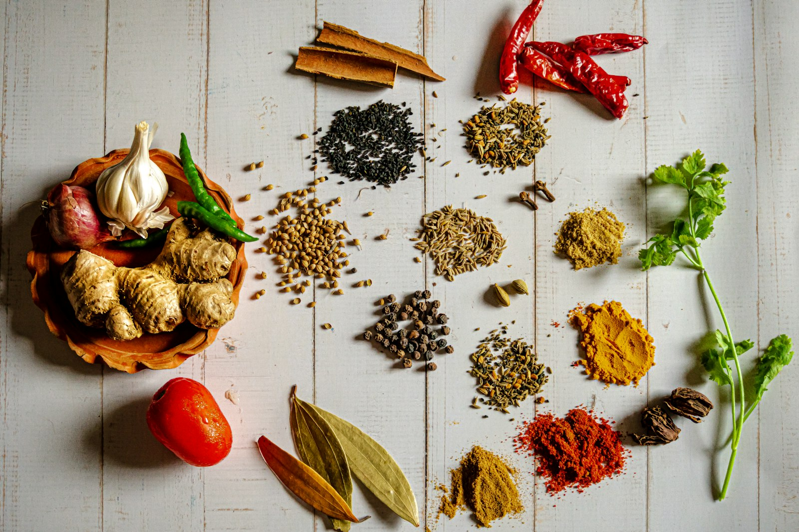

Кулинарные статьи
Информационный кластер: материалы, которые поддерживают SEO и отвечают на информационные интенции — «как выбрать», «как нарезать», «какие специи».
Информационный кластер: материалы, которые поддерживают SEO и отвечают на информационные интенции — «как выбрать», «как нарезать», «какие специи».